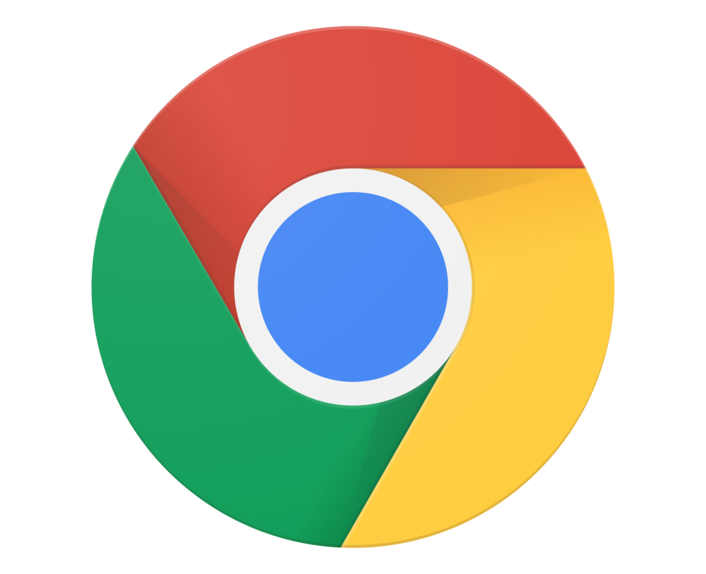
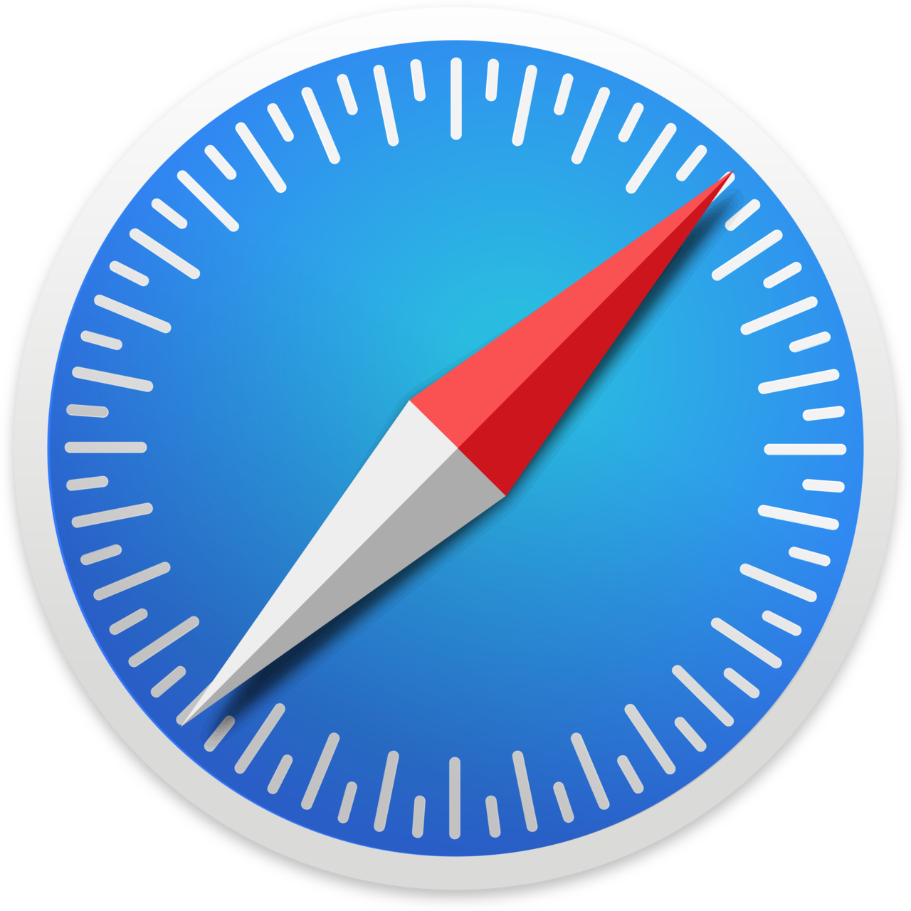
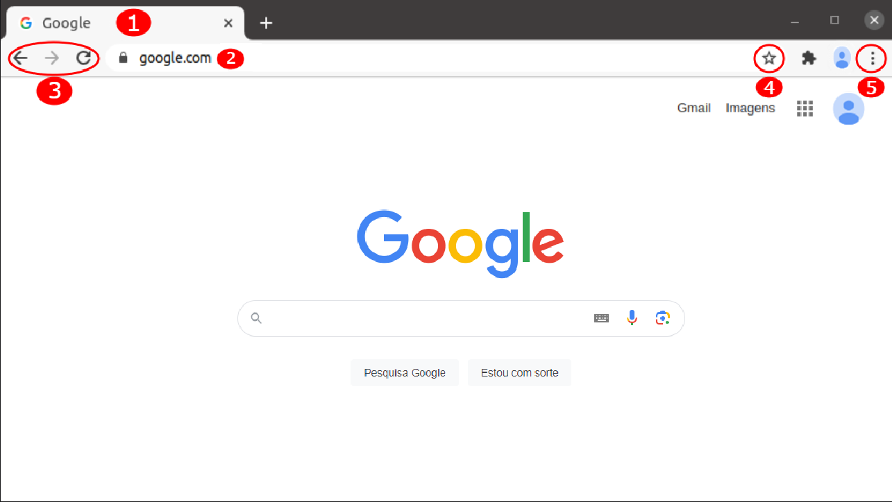

Navegação na Internet
A navegação na internet é o processo de acessar e explorar sites e páginas da web por meio de um navegador. Os usuários inserem URLs (endereços de sites) ou realizam pesquisas para encontrar conteúdo online, como textos, imagens, vídeos ou aplicativos. A internet conecta dispositivos ao redor do mundo, permitindo que as pessoas acessem informações, se comuniquem, façam compras e utilizem serviços digitais.
Principais Navegadores
Google Chrome:
Desenvolvido pelo Google, é o navegador mais usado no mundo. É conhecido por sua velocidade, simplicidade e integração com os serviços do Google.
Mozilla Firefox:
Criado pela Mozilla, é conhecido por seu foco em privacidade e personalização. Oferece extensões e configurações que protegem os dados dos usuários.
Microsoft Edge:
O Microsoft Edge, desenvolvido pela Microsoft, é a evolução do antigo Internet Explorer. Lançado em 2015, ele utiliza o motor Chromium, o mesmo do Google Chrome. O navegador oferece um desempenho rápido, além de uma integração avançada com o sistema operacional Windows e os serviços de nuvem da Microsoft, como o OneDrive e o Office 365.
Safari:
Navegador exclusivo para dispositivos Apple, como iPhones, iPads e Macs. É otimizado para o hardware da Apple e tem foco em velocidade e eficiência energética.
Opera:
Um navegador com foco em recursos inovadores, como bloqueador de anúncios embutido, VPN gratuita e modos de economia de dados, ideal para quem busca funcionalidades extras.
Navegando na Internet
Agora vamos explorar algumas das principais funcionalidades de um navegador, utilizando o Google Chrome como exemplo, já que ele é o navegador mais usado no mundo atualmente.
- Guias/Abas: As guias de um navegador, também chamadas de abas, permitem que os usuários abram e naveguem em várias páginas da web simultaneamente, sem precisar abrir várias janelas. Cada guia funciona como uma sessão separada, facilitando o acesso e a organização de diferentes sites ao mesmo tempo dentro de uma única janela do navegador.
- Barra de endereços: A barra de endereços é usada para digitar e pesquisar URLs (Uniform Resource Locator) ou termos (por exemplo, www.google.com).
- setas e botão de recarregar: As setas de um navegador são os botões de "voltar" e "avançar", que permitem navegar entre as páginas que você já visitou, voltando para uma anterior ou avançando para uma seguinte. O botão de "recarregar" (ou "atualizar") serve para atualizar o conteúdo da página que está sendo visualizada, recarregando os dados e garantindo que as informações estejam atualizadas
- Botão de favorito: Permite que o usuário salve uma página da web para acessá-la rapidamente no futuro. Ao clicar nesse botão, o site é adicionado à lista de favoritos ou marcadores do navegador, facilitando o acesso sem a necessidade de digitar novamente a URL ou fazer uma busca.
- Menu de opções: O menu de opções de um navegador oferece uma série de configurações e ferramentas que permitem ao usuário personalizar e controlar a experiência de navegação. A partir desse menu, é possível acessar funcionalidades como histórico de navegação, favoritos, downloads, configurações de privacidade, extensões instaladas, além de ajustar preferências de aparência e desempenho do navegador.